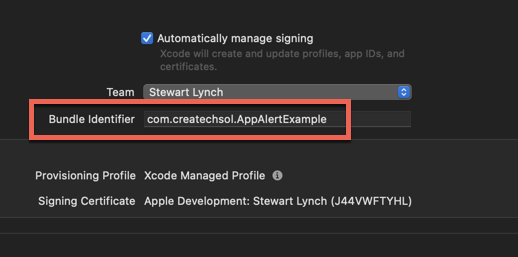
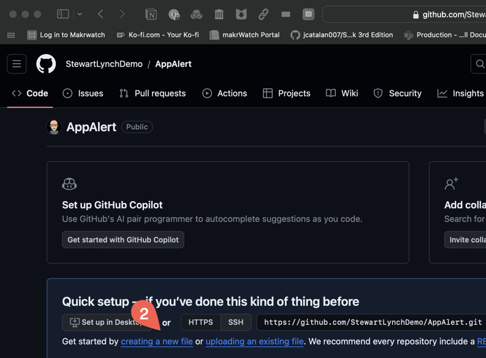
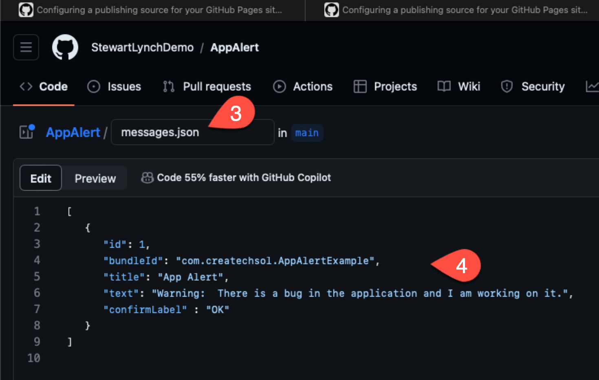
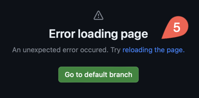
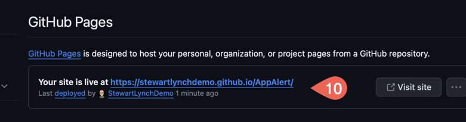
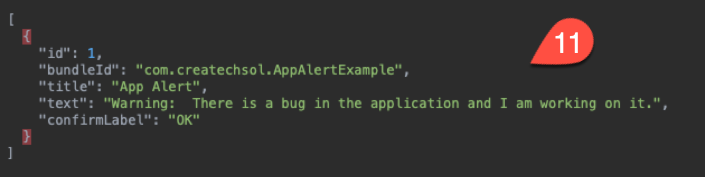

Dynamic Application Message Alerts
There may be times that you have an urgent need to alert users of your apps and you need to do this without having to wait for an AppStore update.
Perhaps a recent OS update is causing an issue with some functionality in your app and you need a little time to work on it. You are getting bad reviews or support emails are getting out of control.
Wouldn't it be nice if you could somehow get the word out to the users that you are working on it and that a fix will come soon.
Maybe you need to provide them with a link to some site that will show them a temporary workaround.
Well that is what this video is all about. I need to find a way to present an in app alert to all of my users at any time without pushing out a new version.
I am going to accomplish this by storing a small json object in a specific location on one of my GitHub repositories so that I can update it at will and then have my app fetch and decode it.
I will perform a check in my app to see if it has already seen that information and if not, present an alert using the information decoded from the fetched json object.
Create a Sample App
The first, create a sample application to test out the solution. Each application will have a unique Bundle ID and you can use that to make sure that you are grabbing the correct json object from the array that you will be decoding. You can use the same json payload for all of your applications with each object in the array being a potential message for one of your apps. You'll be able to know which one you want by the app's Bundle ID.
You can call the app anything you want. For example AppAlertExample
Once the app has been created, make note of or copy the Bundle Identifier
In my case it is
com.createchsol.AppAlertExample

GitHub Pages
GitHub Pages is a static site hosting service that takes HTML, CSS, and JavaScript files straight from a repository on GitHub and publishes a website.
GitHub Pages is available in public repositories with GitHub Free and in public and private repositories with GitHub Pro so there is no cost to you to do this if you want to use a public repository.
The only requirement is that you have a GitHub account. Since it is now free for unlimited public and private repositories, there is no financial barrier.
You can find out more about GitHub Pages at this link
Let's step through the process of creating a repository that will act as our GitHub pages source.
First, log in to your GitHub account.
Once you have your account, and are logged in, create a new repository and call it AppAlert.

You can create a new file from the resulting page once the repository has been created by clicking on the Get started by creating a new file link.

It is in this file that we want to create a JSON object that will allow us to decode in our app so call the file messages.json.
For body of the file, you can an array of json object that will represent the information that you want use to present an alert in your applications when necessary.
Start with an empty array and within the array, create a json object for every one of the apps that you want to use to deploy this solution to.
So, for this sample app, create a json object with 5 key-value pairs.
The first key will be
idand it will be an Int representing the message number. Set the value to 1 indicating this will be the first message ever presented in the app.Next, the key will be for
bundleIdand the value will be the value for the app's Bundle ID.You can paste in as a string, that Bundle ID from your demo application.
Next, create a
titlekey that will represent the tile to be used on an alert. For the value, provide an appropriate string.Follow this with a
textkey to represent the message text in an alert and then the value, again, provide an appropriate string.For the final key, use
confirmLabeland provide the string that you want use for the dismiss or confirmation button label on the alert.
[ { "id": 1, "bundleId": "com.createchsol.AppAlertExample", "title": "App Alert", "text": "Warning: There is a bug in the application and I am working on it.", "confirmLabel" : "OK" }]
Make sure you Commit and save this update. You can use the default message provided for the commit.
When you do that, you will be presented with this error alert. Do not worry about it. Just go to the default branch, which is main 
Next, you need to set up the Pages component of this repository so that it will provide your json object upon a fetch request from your app.
Click on Click on the Settings tab at the top.
Click on Pages in the sidebar.
Choose the main branch.
Click on Save.

It will take a short time to deploy, but fairly shortly, if you keep refreshing the browser, you will see it the notification on this page providing you with a link to the root of your new pages website.

You will see the link at the top.
Your site is live at https://stewartlynchdemo.github.io/AppAlert/This is the link to the Root folder, since you called the file messages.json the link to that file will be.
https://stewartlynchdemo.github.io/AppAlert/messages.jsonIf you copy that url into a browser search/navigation field and press
, you will see the JSON Returned.

This is exactly what you need to fetch from your application and then decode it into an array of messages and find the one that will correspond to your application's Bundle ID.
Creating the Message Service
Now, it is up to you to create a generic AlertService that you can use in all of your apps including the demo one.
To make this a drop-in reusable service, or potentially create a Swift Package for this, you can create a class using the Observation framework introduced in iOS 17 to monitor changes
In your project create a new Swift file and call it AlertService.
In that file, create a class using that file name and apply the
@Observablemacro to it.
@Observableclass AlertService { }Within the class, create a struct that will model your json object.
Call it Message and have it conform to the Codable protocol.
The struct will need 5 properties where the property names match the keys the json object created on the GitHub pages, messages.json array.
All values will be Strings except for the id property which is an Int.
Since you will only display this message when you received some valid JSON in the fetch and update it with the fetched values, you can provide default values for each here to make it easier to create an initial instance of this struct in step 4 below. Use empty strings for the String properties and 0 for the id.
struct Message: Codable { var id: Int = 0 var bundleId: String = "" var title: String = "" var text: String = "" var confirmLabel: String = ""}Next, create the class properties.
The first one will be called
jsonURLand it will be a String. We will pass in the string for the url when the class is initialized. This is the url that points to the messages.json.The second will is a convenience property called
bundleIdentifierthat will a String representing the applications Bundle Identifier. It can be initialized usingBundle.main.bundleIdentifierand you will need to force unwrap it.
let jsonURL: Stringlet bundleIdentifier = Bundle.main.bundleIdentifier!You will need an instance of the message struct and that will be updated with values from the decoded JSON.
var message = Message()You will only be presenting the alert if it is necessary, and in that case, your view will need to be monitoring some Boolean property so that if it changes to true, the alert can be presented. So, create a boolean property called
showMessageand initialize it as false.
var showMessage = falseEvery time the app runs, you will want to be able to fetch and decode the json, find the object corresponding to the application's Bundle ID, and then compare the id to one that one you will have persisted in your application somewhere. If that id is greater than the one stored, then you will present the message as an alert and update the id so that it does not present again next time the application launches.
AppStorage is a good place to store this, but since you are not in a SwiftUI view, you cannot use it here. You will have to resort to using UserDefaults.
Create property called
lastMessageIdas an Int and provide a getter and a setter for this property.For the get , use the UserDefaults.standard.integer forKey and specify
lastMessageId. The first time it seeks this, it will not find it, so it will default to 0. This means if your json object that is fetched is greater than 0, you should display the alert using the message information in that json object.For the set, you can again use UserDefaults.standard.setValue and provide the
newValuefor that same key that was used in the getter.
xxxxxxxxxxvar lastMessageId: Int { get { UserDefaults.standard.integer(forKey: "lastMessageId") } set { UserDefaults.standard.setValue(newValue, forKey: "lastMessageId") }}With all of the properties created, the
jsonURLstring is the only one that has not been initialized so you need to create an initializer for this.
xxxxxxxxxxinit(_ jsonURL: String) { self.jsonURL = jsonURL}Now, create the async function that will fetch the Json, decode it, find the first one matching the app's Bundle ID and update the observed message object.
Call the function
fetchMessageand using modern concurrency methods, specify that it is asynchronous.
xxxxxxxxxxfunc fetchMessage() async {}Within the body, create a
do....catchblock.In the do, fetch the data from the url by trying to await the result of calling
URLSession.shared.datafrom the URL formed by the static url and this will have to be unwrapped.
xxxxxxxxxxlet (data, _) = try await URLSession.shared.data(from: URL(string: jsonURL)!)Next, let message be the result of trying to use the JSONDecoder to decode from the array of Message type from that data
Now this will provide an array, so find the first one where the iterators bundleID is equal to the bundleIdentifier.
This however will be an optional value so use an
if letto unwrap it to a single message.Then, if that is the case, update the
self.messageto thatmessagethat has been decoded.If an error is thrown during fetching or decoding, the catch block is executed. During testing, make sure you have a proper JSON array and a
Messagestruct that can successfully decode from that array. The user will not get an alert if this fails so just print out a string to the console that you can use for debugging purposes.
xxxxxxxxxxfunc fetchMessage() async { do { let (data, _) = try await URLSession.shared.data(from: URL(string: url)!) if let message = try JSONDecoder().decode( [Message].self, from: data ).first(where: { $0.bundleId == bundleIdentifier }) { self.message = message } } catch { print("Could not decode") }}To present an alert, you are going to have to toggle some state property in one of the app's views. Preferably, the first view presented, so in the case of this sample application, it will be in
ContentView.To do this, create a function called
showAlertIfNecessaryand within this function you can call thefetchMessagefunction so it needs to be asynchronous too.
xxxxxxxxxxfunc showAlertIfNecessary() async {}In the body, await the call to fetchMessage and if successful, the message object will either have been updated, or the fetch or decoding would have failed and thrown an error so you will have printed the error to the console and the user is none the wiser.
If successfully decoded, check to see if the
message.idis greater than thelastMessageIdIf it is, toggle
showMessageFinally set the
lastMessageIdto thismessage.id
xxxxxxxxxxawait fetchMessage()if message.id > lastMessageId {showMessage.toggle()}lastMessageId = message.idThat is it, Now all you have to do is to initialize an instance of the AlertService in
ContentViewand pass in the url to the json payload.When the view appears, you can create a task and await the result of calling the alertService's
showAlertIfNecessaryfunction.If this results in the observed
showMessageproperty being toggled, you can present an alert using the values obtained from the updatedmessageobject.
Presenting the Alert
In ContentView for the sample app, create a new State property initializing the AlertService and pass in the url to the json.
xxxxxxxxxx@State private var alertService = AlertService("https://stewartlynchdemo.github.io/AppAlert/messages.json")When the view appears, use a task instead of onAppear as the call to the
showAlertIfNecessaryfunction needs to be asynchronous.In the body await the result of the
alertService.showAlertIfNecessary()function. This will either toggle the state property or not depending on whether or not the condition has been met, i.e; the stored fetchedmessage.idhas to be greater than the storedlastMessageId.
xxxxxxxxxx.task { await alertService.showAlertIfNecessary()}Then, attached to one of the views, create an alert that will be presented based on the status of that state property.
The
titleKeywill be thealertService.message.titleproperty.isPresentedis bound to$alertService.showMessage.The first closure allows you to create action buttons.
Create a button with the label provided by
alertService.message.confirmLabelbut leave the action empty. This will simply provide a way to dismiss the alert.
The message closure will be a text view displaying the
alertService.message.text.
That is it done.
xxxxxxxxxx.alert( alertService.message.title, isPresented: $alertService.showMessage) { Button(alertService.message.confirmLabel) {} } message: { Text(alertService.message.text) }If you run the application, since your initial lastMessageId will be 0 and the fetched id is 1, this will set showMessage to true and trigger the presentation of the alert.
This will also update the lastMessageId to that value.
If you run the app again a second time, you will find that the alert is not presented.
Let's pretend now that you have another issue that we need to alert your users to but you want to do more than what you have already. You would like to provide an option for your users to click on a link that can go to some external web site.
Update the Message struct
First then, you will need to create a new property in the message struct.
This property itself will include the link as well as the label for the link button, so within the Message struct, create a new struct called Link that conforms to the Codable protocol
Then create two properties, one for
titleand one forurl, both Strings.
xxxxxxxxxxstruct Link: Codable { let title: String let url: String}As you may not want to include this link every time we present an alert, you can make it optional as an additional property for our Message struct. This will mean that the existing messages.json is still valid for your current message instance.
xxxxxxxxxxvar link: Link?ViewModifier
There is something that I do not like particularly in this implementation so far. If you look at the code for contentView, that alert will always be the same for every app, so why not bring that code into your AlertService as a ViewModifier.
Cut out the Alert code and return to the AlertService file.
Import SwiftUI as you will need it to create a view modifier.
Inside the AlertService class, create a view modifier called AlertModifier that conforms to ViewModifier
This will have one requirement, a body function that has content as a parameter and returns some view
You can use that content then to apply an alert to.
xxxxxxxxxx struct AlertModifier: ViewModifier { func body(content: Content) -> some View { content } }You can paste in the alert that you copied from contentView as the modifier for content
This will complain because there is no alertService, so we will need to pass that in when we call the modifier.
So create a new property called alertService that is of type Alert Service** and it will have to be a Bindable object.
xxxxxxxxxxstruct AlertModifier: ViewModifier { @Bindable var alertService: AlertService func body(content: Content) -> some View { content .alert( alertService.message.title, isPresented: $alertService.showMessage) { Button(alertService.message.confirmLabel) {} } message: { Text(alertService.message.text) } }}Next, since you added that Link property, you can check to see if was made available to you when you fetched and decoded the JSON.
After the Button, use an
if letto unwrap it and then create a Link button using thelink.titleas the label and thelink.urlto form a URL with that string for the destination url. And it has to be unwrapped.
xxxxxxxxxxif let link = alertService.message.link {Link(link.title, destination: URL(string: link.url)!)}Then one final thing to make this even better. Create an extension for View
xxxxxxxxxxextension View { }And then within the extension, create a function called messageAlert that has a single parameter that is an AlertService'.
In the body, apply the modifier function, passing in the
AlertService.AlertModifier, providing alertService as the argument.
xxxxxxxxxxextension View {func messageAlert(_ alertService: AlertService) -> some View {modifier(AlertService.AlertModifier(alertService: alertService))}}Finally then, return to ContentView, where you removed the alert and apply this new modifier.
xxxxxxxxxx.messageAlert(alertService)Update JSON Object
Return to the GitHub pages repository and open the messages.json file for editing.
Increment the id.
Change the title and text to something appropriate.
This time provide a new object for the Link. (Make sure you add a comma after the confirmLabel key value pair).
The link object will have two key value pairs; one for the title and one for the url.
xxxxxxxxxx"link":{"title":"More information","url":"https://www.createchsol.com"}Commit and save the changes.
xxxxxxxxxx[{"id":2,"bundleId":"com.createchsol.AppAlertExample","title":"App Alert","text":"Warning: There is a bug in the application and I am working on it.","confirmLabel":"OK","link":{"title":"More information","url":"https://www.createchsol.com"}}]It will take up to 30 seconds for GitHub to clear its cache and update the site. You can enter that url
https://stewartlynchdemo.github.io/AppAlert/messages.jsonand keep refreshing the page, waiting for it to have been updated.
Test
Return to your app now and run.
This time, because the fetched message has found an id that is greater than the one stored in the UserDefaults, the alert is presented.
Also, because this message had a Link object, that link button is also presented, and tapping on it will take you to the specified web site.
Potential Issues
It may be the case as you are testing your app and updating the json on your GitHub page, that when you return and run your app, the alert is not presented. Why would this be the case?
It turns out that your app is caching the html content. Eventually, the cache will get purged and if you wait long enough it will. This will not really be an issue for your users, because it does get cleared fairly quickly, but if you are impatient during testing and would like to clear that cache immediately for testing purposes, you can do that
You just need to know where to look for that cache, and as another thought, perhaps, you just want to update the stored lastMessageId. Where is that information persisted?
Add two static properties to your AlertService
Name the first,
cacheLocationand it will be the static propertyURL.cachesDirectoryThe second is the
userDefaultsLocationwhich is also a static static property forURL.libraryDirectoryby appending the pathPreferences
xxxxxxxxxxstatic let cacheLocation = URL.cachesDirectorystatic let userDefaultsLocation = URL.libraryDirectory.appending(path: "Preferences")Now, when the app launches you can print the path location for easy copying and locating in finder.
xxxxxxxxxx.onAppear { print(AlertService.cacheLocation.path()) print(AlertService.userDefaultsLocation.path())}When you run the app, you will find the two urls printed to the console.
Clearing the cache.
If you are not getting an alert and you expect one, it could be that the cache has not been purged, so you can right click on the caches path in the console and choose Open from the services menu to run the service and open the finder window showing the cache. To clear the cache, just delete it and run again.
Updating the lastMessageId
If I want to test the app out again, you can either go back and update that JSON object by providing a higher id value, or you can change the value stored in UserDefaults so that it is less than the value in your message id.
If you do not update the JSON, but still want to verify that all is well, you can either delete the current userDefaults and run again. However, you may have other values persisted in UserDefaults unrelated to this alert so deleting it may not be a great idea. What you can do, is update that single value by setting it back to some value lower than the id in the message json for this application.
It turns out that this is just a file in the preferences folder your my app and use that link to go there in the same way that you opened the cache location
You can double click on this file and open it in Xcode. You will find that the id has a value which is the same as the id in the jSON object.
Change this value to any number less than that.
When you run again, the alert pops up.
I hope that you have found this tutorial helpful and that you can see uses for this technique in your own projects.
I am sure you can get creative with the JSON payload so that you can provide much more information and instead of presenting an alert, present a modal sheet instead.
One thing you might consider is to create another static property that will provide the OS version and another for the version number of your application. Then in the JSON file create string keys for these and if necessary, provide os values and build numbers that might trigger a specific action in your application based on a comparison like you did with the id.
It is all up to your own imagination here. It is very powerful.